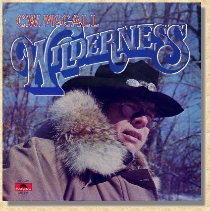
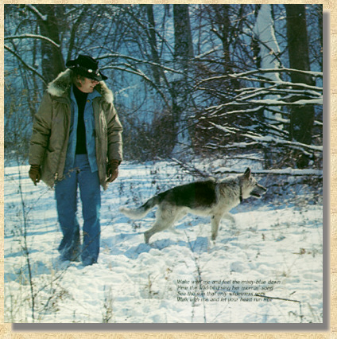

|
 WildernessSide One 1. Wilderness, 3:38 2. Jackson Hole, 2:39 3. Riverside Slide, 3:22 4. Crispy Critters, 2:50 5. Roy, :35 6. The Little Brown Sparrow and Me, 3:57 Side Two 1. There Won't Be No Country Music (There Won't Be No Rock 'N Roll), 3:50 2. Telluride Breakdown, (Instrumental) 2:08 3. Four Wheel Cowboy, 3:27 4. Silver Iodide Blues, 1:17 5. Columbine, 1:45 6. Aurora Borealis, 4:10 |
|
 Produced by Don Sears, Chip Davis Arranged by Chip Davis Al Songs Written by C. W. McCall, Bill Fries, Chip Davis Published by American Gramaphone SESAC Recorded & Mastered at Sound Recorders, Inc., Omaha, Nebraska and Kansas City, Missouri Engineered by Don Sears, John Boyd Strings Recorded by Ron Ubel Album Design by Bill Fries, Don Sears Photography by Don Sears Art Direction and Production by Dudycha, Schirck and Associates, Inc. |
|
Wilderness Personnel:
Vocals: Ron Agnew, Milt Bailey, Almeda Berkey, Jackson Berkey, Chip Davis, Gary Morris, Carol Rogers, Jan Sheldrick, Kris Sparks, Sarah Westphalen / Rhythm: Keyboards: Milt Bailey, Jackson Berkey; 12 String, Electric Guitar: Ron Cooley; Drums: Chip Davis; Bass: Eric Hansen; Banjo: Steve Hanson; Pots and Pans: Dick Solowicz; Chimes: Chris Stoval / Strings: Mortimer Alpert, Bruce Bransby, Ruth Bransby, Dorothy Brown, Hugh Brown, Miriam Dufflemeyer, Ginni Eldred, Lucinda Gladics, James Hammond, Jean Hassel, Joe Landes, Gary Lawrence, Beth McCollum, Martin Pearson, Gertrude Phalp, Barbara Potter, Merton Shatzkin, Alex Sokol / Woodwinds: Robert Jenkins, Willis Ann Ross / Brass: Gene Badgett, Michael Berger, Frank Franano, Steve Miller, David Reiswig, Richard Scott, Jim Schanilec, Jim Shoush, Dan Strom, Don Swaggard, Bill Trumbauer, Stephen Weger, Mike Young (c) (P) 1976 POLYDOR Incorporated Manufactured and Distributed by POLYDOR Incorporated 810 Seventh Avenue New York, N.Y. 10019 Printed in U.S.A. Manufactured by MGM Records, Inc., 7165 Sunset Boulevard, Hollywood, California 90046 |

This Web page is hosted by: Mark L. Evans
Written and maintained by: Miles A. Lumbard
Send Comments to:Miles A. Lumbard